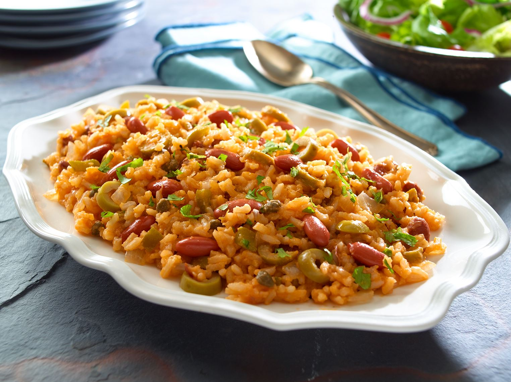
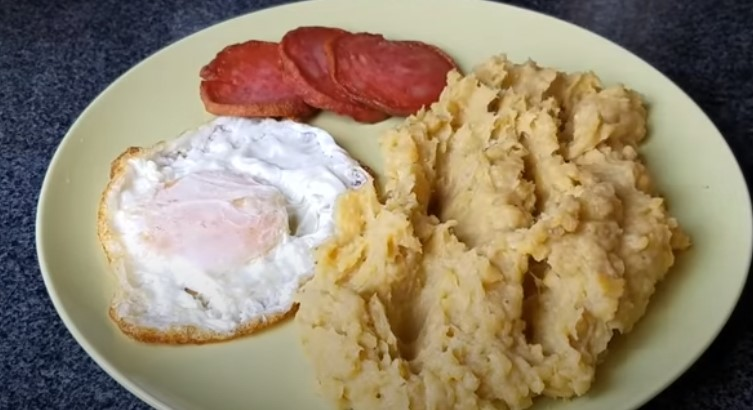
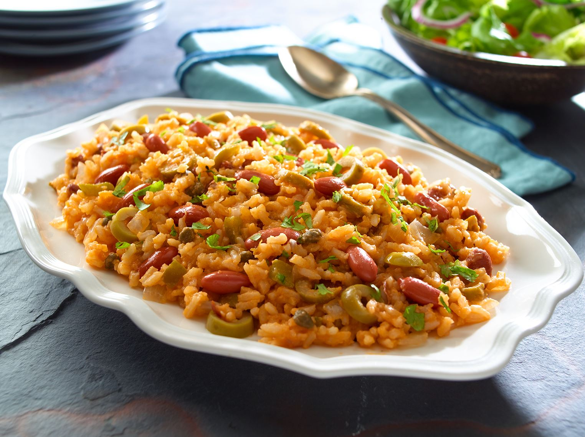
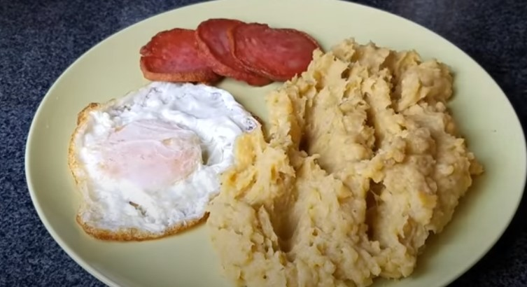
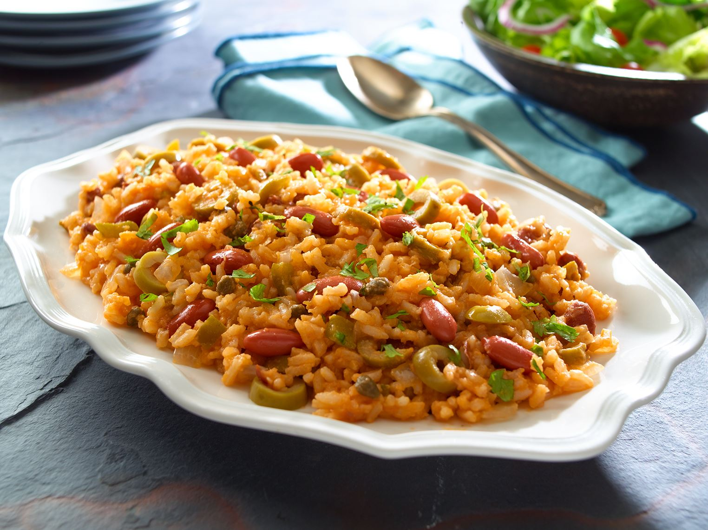
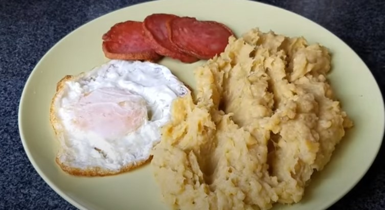

El desayuno dominicano consiste de un plato que llaman “los tres golpes”: mangú, un plato típico dominicano elaborado con un puré de plátano verde, y terminado con cebolla roja cocinada en una salsa de vinagre, queso, salami frito y opcional el huevo. El plato típico del almuerzo es la bandera dominicana. Un plato con arroz y habichuelas, con pollo/carne, acompañado de una ensalada, aguacate y tostones. El sancocho tiene un peso aún más simbólico y normalmente se hace para una ocasión especial. Se debe compartir con la familia y seres queridos. En este combina pollo, cerdo, yuca, ñame, plátanos verdes y papas. Se sirve con un tazón de arroz blanco y rebanadas de aguacate. Otra comida dominicana por excelencia son los pasteles en hoja. Estos son la versión dominicana de los tamales, aunque hechos con masa de plátano, rellenos de carne y envueltos en una hoja de plátano. El mofongo, un plato original de Puerto Rico, tiene su propia versión dominicana, con plátanos majados, ajo y cerdo o camarones.

